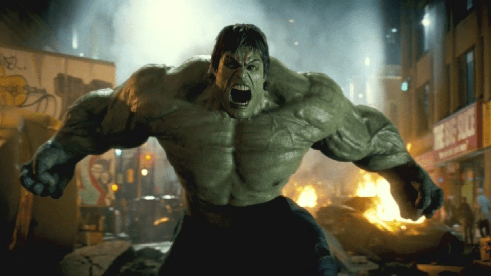
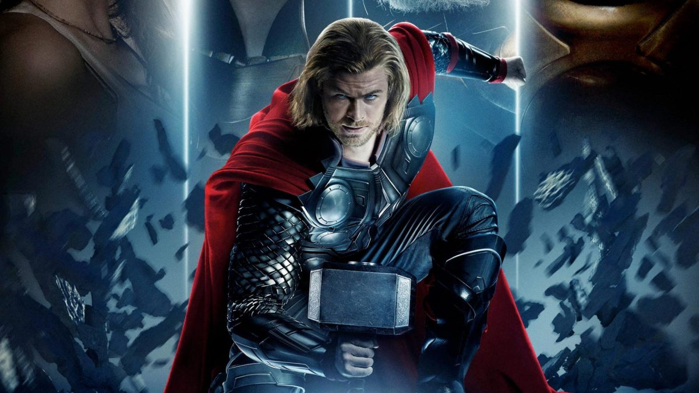

Museu da Marvel - super top
Criado por gaby-yyx
Homem de Ferro

Sequestrado por terroristas, Tony é obrigado a construir uma arma que pode devastar o mundo.
Em vez disso, ele constrói uma armadura que o ajuda a fugir do cativeiro. A partir daí, Stark assume a identidade do Homem de Ferro e passa a combater o crime.
Capitão América

Sobre o personagem: Steve Rogers era um rapaz franzino que, durante a Segunda Guerra Mundial, tinha como maior sonho servir aos Estados Unidos na luta contra os nazistas.
Mas sua saúde frágil seria um eterno empecilho, se o rapaz não aceitasse participar em um experimento que poderia transformá-lo em um novo homem.
Hulk

Hulk explora as origens de Bruce Banner, que depois de um acidente de laboratório
envolvendo radiação gama se torna capaz de se transformar em um enorme monstro de pele verde sempre que ele fica com raiva,
enquanto ele é perseguido pelos militares dos Estados Unidos e entra em um conflito com o seu pai.
Thor

O filme apresenta Thor em uma jornada diferente de tudo que ele já enfrentou uma busca pela paz interior.
Mas sua aposentadoria é interrompida por um assassino galático conhecido como Gorr, o Carniceiro dos Deuses, que busca a extinção dos deuses.